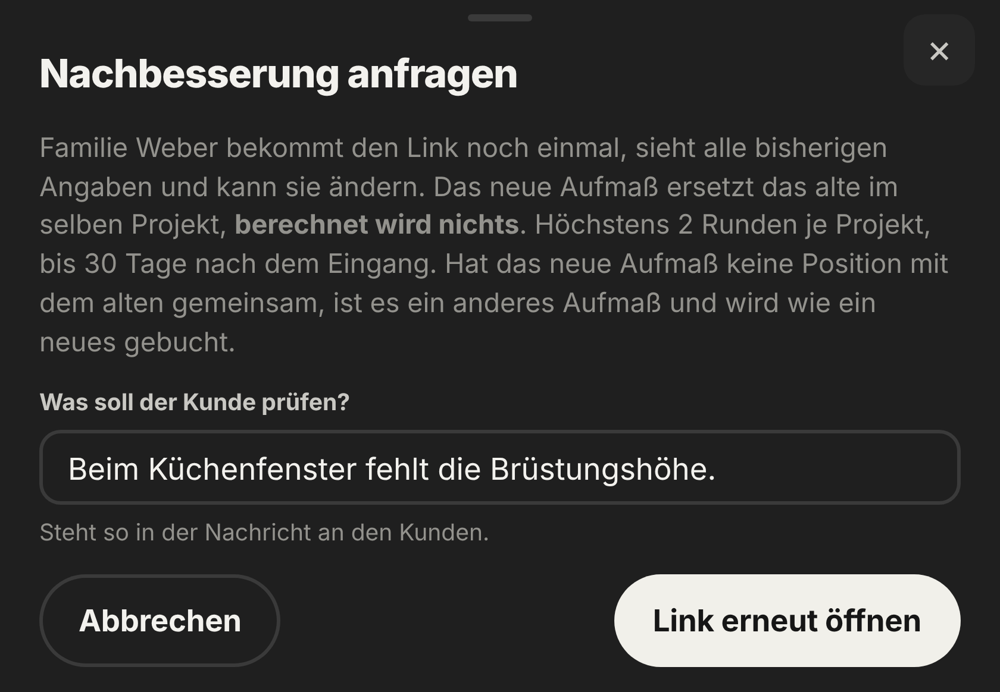

Nachbesserung
Nachbessern
kostenlos.
Ihr Kunde bekommt den Link noch einmal und ändert nur das Nötige. Berechnet wird nichts.
- Bis zu 2 Runden
- Bis 30 Tage nach Eingang
- Ihr Hinweis in der Nachricht

Nachbesserung
Ihr Kunde bekommt den Link noch einmal und ändert nur das Nötige. Berechnet wird nichts.
